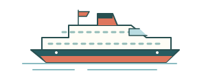

MS Trollfjord.
Waiting for AIS
Last positionRecent trackArctic Circle
N↑
Fetching the latest AIS report…
Some map tiles could not load. Ship data is shown below.
The ship’s log Last transmitted AIS report · times in UTC
- Position
- —
- Speed over ground
- — kn
- Course over ground
- —
- Destination / AIS
- —
- Status
- Reported / UTC
- —